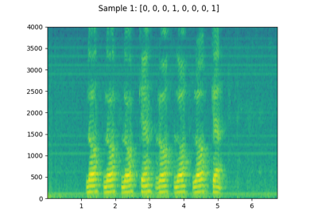

torchaudio.datasets¶
All datasets are subclasses of torch.utils.data.Dataset
and have __getitem__ and __len__ methods implemented.
Hence, they can all be passed to a torch.utils.data.DataLoader
which can load multiple samples parallelly using torch.multiprocessing workers.
For example:
yesno_data = torchaudio.datasets.YESNO('.', download=True)
data_loader = torch.utils.data.DataLoader(yesno_data,
batch_size=1,
shuffle=True,
num_workers=args.nThreads)
CMUARCTIC¶
-
class
torchaudio.datasets.CMUARCTIC(root: Union[str, pathlib.Path], url: str = 'aew', folder_in_archive: str = 'ARCTIC', download: bool = False)[source]¶ Create a Dataset for CMU ARCTIC [1].
- Parameters
root (str or Path) – Path to the directory where the dataset is found or downloaded.
url (str, optional) – The URL to download the dataset from or the type of the dataset to download. (default:
"aew") Allowed type values are"aew","ahw","aup","awb","axb","bdl","clb","eey","fem","gka","jmk","ksp","ljm","lnh","rms","rxr","slp"or"slt".folder_in_archive (str, optional) – The top-level directory of the dataset. (default:
"ARCTIC")download (bool, optional) – Whether to download the dataset if it is not found at root path. (default:
False).
CMUDict¶
-
class
torchaudio.datasets.CMUDict(root: Union[str, pathlib.Path], exclude_punctuations: bool = True, *, download: bool = False, url: str = 'http://svn.code.sf.net/p/cmusphinx/code/trunk/cmudict/cmudict-0.7b', url_symbols: str = 'http://svn.code.sf.net/p/cmusphinx/code/trunk/cmudict/cmudict-0.7b.symbols')[source]¶ Create a Dataset for CMU Pronouncing Dictionary [2] (CMUDict).
- Parameters
root (str or Path) – Path to the directory where the dataset is found or downloaded.
exclude_punctuations (bool, optional) – When enabled, exclude the pronounciation of punctuations, such as !EXCLAMATION-POINT and #HASH-MARK.
download (bool, optional) – Whether to download the dataset if it is not found at root path. (default:
False).url (str, optional) – The URL to download the dictionary from. (default:
"http://svn.code.sf.net/p/cmusphinx/code/trunk/cmudict/cmudict-0.7b")url_symbols (str, optional) – The URL to download the list of symbols from. (default:
"http://svn.code.sf.net/p/cmusphinx/code/trunk/cmudict/cmudict-0.7b.symbols")
COMMONVOICE¶
-
class
torchaudio.datasets.COMMONVOICE(root: Union[str, pathlib.Path], tsv: str = 'train.tsv')[source]¶ Create a Dataset for CommonVoice [3].
- Parameters
root (str or Path) – Path to the directory where the dataset is located. (Where the
tsvfile is present.)tsv (str, optional) – The name of the tsv file used to construct the metadata, such as
"train.tsv","test.tsv","dev.tsv","invalidated.tsv","validated.tsv"and"other.tsv". (default:"train.tsv")
GTZAN¶
-
class
torchaudio.datasets.GTZAN(root: Union[str, pathlib.Path], url: str = 'http://opihi.cs.uvic.ca/sound/genres.tar.gz', folder_in_archive: str = 'genres', download: bool = False, subset: Optional[str] = None)[source]¶ Create a Dataset for GTZAN [4].
Note
Please see http://marsyas.info/downloads/datasets.html if you are planning to use this dataset to publish results.
- Parameters
root (str or Path) – Path to the directory where the dataset is found or downloaded.
url (str, optional) – The URL to download the dataset from. (default:
"http://opihi.cs.uvic.ca/sound/genres.tar.gz")folder_in_archive (str, optional) – The top-level directory of the dataset.
download (bool, optional) – Whether to download the dataset if it is not found at root path. (default:
False).subset (str or None, optional) – Which subset of the dataset to use. One of
"training","validation","testing"orNone. IfNone, the entire dataset is used. (default:None).
LibriMix¶
-
class
torchaudio.datasets.LibriMix(root: Union[str, pathlib.Path], subset: str = 'train-360', num_speakers: int = 2, sample_rate: int = 8000, task: str = 'sep_clean')[source]¶ Create the LibriMix [5] dataset.
- Parameters
root (str or Path) – The path to the directory where the directory
Libri2MixorLibri3Mixis stored.subset (str, optional) – The subset to use. Options: [
train-360,train-100,dev, andtest] (Default:train-360).num_speakers (int, optional) – The number of speakers, which determines the directories to traverse. The Dataset will traverse
s1tosNdirectories to collect N source audios. (Default: 2)sample_rate (int, optional) – sample rate of audio files. The
sample_ratedetermines which subdirectory the audio are fetched. If any of the audio has a different sample rate, raisesValueError. Options: [8000, 16000] (Default: 8000)task (str, optional) – the task of LibriMix. Options: [
enh_single,enh_both,sep_clean,sep_noisy] (Default:sep_clean)
Note
The LibriMix dataset needs to be manually generated. Please check https://github.com/JorisCos/LibriMix
-
__getitem__(key: int) → Tuple[int, torch.Tensor, List[torch.Tensor]][source]¶ Load the n-th sample from the dataset. :param key: The index of the sample to be loaded :type key: int
- Returns
(sample_rate, mix_waveform, list_of_source_waveforms)- Return type
(int, Tensor, List[Tensor])
LIBRISPEECH¶
-
class
torchaudio.datasets.LIBRISPEECH(root: Union[str, pathlib.Path], url: str = 'train-clean-100', folder_in_archive: str = 'LibriSpeech', download: bool = False)[source]¶ Create a Dataset for LibriSpeech [6].
- Parameters
root (str or Path) – Path to the directory where the dataset is found or downloaded.
url (str, optional) – The URL to download the dataset from, or the type of the dataset to dowload. Allowed type values are
"dev-clean","dev-other","test-clean","test-other","train-clean-100","train-clean-360"and"train-other-500". (default:"train-clean-100")folder_in_archive (str, optional) – The top-level directory of the dataset. (default:
"LibriSpeech")download (bool, optional) – Whether to download the dataset if it is not found at root path. (default:
False).
LibriLightLimited¶
-
class
torchaudio.datasets.LibriLightLimited(root: Union[str, pathlib.Path], subset: str = '10min', download: bool = False)[source]¶ - Create a Dataset for LibriLightLimited, which is the supervised subset of
LibriLight dataset.
- Parameters
LIBRITTS¶
-
class
torchaudio.datasets.LIBRITTS(root: Union[str, pathlib.Path], url: str = 'train-clean-100', folder_in_archive: str = 'LibriTTS', download: bool = False)[source]¶ Create a Dataset for LibriTTS [7].
- Parameters
root (str or Path) – Path to the directory where the dataset is found or downloaded.
url (str, optional) – The URL to download the dataset from, or the type of the dataset to dowload. Allowed type values are
"dev-clean","dev-other","test-clean","test-other","train-clean-100","train-clean-360"and"train-other-500". (default:"train-clean-100")folder_in_archive (str, optional) – The top-level directory of the dataset. (default:
"LibriTTS")download (bool, optional) – Whether to download the dataset if it is not found at root path. (default:
False).
LJSPEECH¶
-
class
torchaudio.datasets.LJSPEECH(root: Union[str, pathlib.Path], url: str = 'https://data.keithito.com/data/speech/LJSpeech-1.1.tar.bz2', folder_in_archive: str = 'wavs', download: bool = False)[source]¶ Create a Dataset for LJSpeech-1.1 [8].
- Parameters
root (str or Path) – Path to the directory where the dataset is found or downloaded.
url (str, optional) – The URL to download the dataset from. (default:
"https://data.keithito.com/data/speech/LJSpeech-1.1.tar.bz2")folder_in_archive (str, optional) – The top-level directory of the dataset. (default:
"wavs")download (bool, optional) – Whether to download the dataset if it is not found at root path. (default:
False).
SPEECHCOMMANDS¶
-
class
torchaudio.datasets.SPEECHCOMMANDS(root: Union[str, pathlib.Path], url: str = 'speech_commands_v0.02', folder_in_archive: str = 'SpeechCommands', download: bool = False, subset: Optional[str] = None)[source]¶ Create a Dataset for Speech Commands [9].
- Parameters
root (str or Path) – Path to the directory where the dataset is found or downloaded.
url (str, optional) – The URL to download the dataset from, or the type of the dataset to dowload. Allowed type values are
"speech_commands_v0.01"and"speech_commands_v0.02"(default:"speech_commands_v0.02")folder_in_archive (str, optional) – The top-level directory of the dataset. (default:
"SpeechCommands")download (bool, optional) – Whether to download the dataset if it is not found at root path. (default:
False).subset (str or None, optional) – Select a subset of the dataset [None, “training”, “validation”, “testing”]. None means the whole dataset. “validation” and “testing” are defined in “validation_list.txt” and “testing_list.txt”, respectively, and “training” is the rest. Details for the files “validation_list.txt” and “testing_list.txt” are explained in the README of the dataset and in the introduction of Section 7 of the original paper and its reference 12. The original paper can be found here. (Default:
None)
TEDLIUM¶
-
class
torchaudio.datasets.TEDLIUM(root: Union[str, pathlib.Path], release: str = 'release1', subset: str = 'train', download: bool = False, audio_ext: str = '.sph')[source]¶ Create a Dataset for Tedlium [10]. It supports releases 1,2 and 3.
- Parameters
root (str or Path) – Path to the directory where the dataset is found or downloaded.
release (str, optional) – Release version. Allowed values are
"release1","release2"or"release3". (default:"release1").subset (str, optional) – The subset of dataset to use. Valid options are
"train","dev", and"test". Defaults to"train".download (bool, optional) – Whether to download the dataset if it is not found at root path. (default:
False).audio_ext (str, optional) – extension for audio file (default:
".sph")
VCTK_092¶
-
class
torchaudio.datasets.VCTK_092(root: str, mic_id: str = 'mic2', download: bool = False, url: str = 'https://datashare.is.ed.ac.uk/bitstream/handle/10283/3443/VCTK-Corpus-0.92.zip', audio_ext='.flac')[source]¶ Create VCTK 0.92 [11] Dataset
- Parameters
root (str) – Root directory where the dataset’s top level directory is found.
mic_id (str, optional) – Microphone ID. Either
"mic1"or"mic2". (default:"mic2")download (bool, optional) – Whether to download the dataset if it is not found at root path. (default:
False).url (str, optional) – The URL to download the dataset from. (default:
"https://datashare.is.ed.ac.uk/bitstream/handle/10283/3443/VCTK-Corpus-0.92.zip")audio_ext (str, optional) – Custom audio extension if dataset is converted to non-default audio format.
Note
All the speeches from speaker
p315will be skipped due to the lack of the corresponding text files.All the speeches from
p280will be skipped formic_id="mic2"due to the lack of the audio files.Some of the speeches from speaker
p362will be skipped due to the lack of the audio files.
DR_VCTK¶
-
class
torchaudio.datasets.DR_VCTK(root: Union[str, pathlib.Path], subset: str = 'train', *, download: bool = False, url: str = 'https://datashare.ed.ac.uk/bitstream/handle/10283/3038/DR-VCTK.zip')[source]¶ Create a dataset for Device Recorded VCTK (Small subset version) [12].
- Parameters
root (str or Path) – Root directory where the dataset’s top level directory is found.
subset (str) – The subset to use. Can be one of
"train"and"test". (default:"train").download (bool) – Whether to download the dataset if it is not found at root path. (default:
False).url (str) – The URL to download the dataset from. (default:
"https://datashare.ed.ac.uk/bitstream/handle/10283/3038/DR-VCTK.zip")
YESNO¶
-
class
torchaudio.datasets.YESNO(root: Union[str, pathlib.Path], url: str = 'http://www.openslr.org/resources/1/waves_yesno.tar.gz', folder_in_archive: str = 'waves_yesno', download: bool = False)[source]¶ Create a Dataset for YesNo [13].
- Parameters
root (str or Path) – Path to the directory where the dataset is found or downloaded.
url (str, optional) – The URL to download the dataset from. (default:
"http://www.openslr.org/resources/1/waves_yesno.tar.gz")folder_in_archive (str, optional) – The top-level directory of the dataset. (default:
"waves_yesno")download (bool, optional) – Whether to download the dataset if it is not found at root path. (default:
False).
- Tutorials using
YESNO: - Audio Datasets
QUESST14¶
-
class
torchaudio.datasets.QUESST14(root: Union[str, pathlib.Path], subset: str, language: Optional[str] = 'nnenglish', download: bool = False)[source]¶ Create QUESST14 [14] Dataset
- Parameters
root (str or Path) – Root directory where the dataset’s top level directory is found
subset (str) – Subset of the dataset to use. Options: [
"docs","dev","eval"].language (str or None, optional) – Language to get dataset for. Options: [
None,albanian,basque,czech,nnenglish,romanian,slovak]. IfNone, dataset consists of all languages. (default:"nnenglish")download (bool, optional) – Whether to download the dataset if it is not found at root path. (default:
False)
References¶
- 1
John Kominek, Alan W Black, and Ver Ver. Cmu arctic databases for speech synthesis. Technical Report, 2003.
- 2
R.L. Weide. The carnegie mellon pronuncing dictionary. 1998. URL: http://www.speech.cs.cmu.edu/cgi-bin/cmudict.
- 3
Rosana Ardila, Megan Branson, Kelly Davis, Michael Henretty, Michael Kohler, Josh Meyer, Reuben Morais, Lindsay Saunders, Francis M. Tyers, and Gregor Weber. Common voice: a massively-multilingual speech corpus. 2020. arXiv:1912.06670.
- 4
George Tzanetakis, Georg Essl, and Perry Cook. Automatic musical genre classification of audio signals. 2001. URL: http://ismir2001.ismir.net/pdf/tzanetakis.pdf.
- 5
Joris Cosentino, Manuel Pariente, Samuele Cornell, Antoine Deleforge, and Emmanuel Vincent. Librimix: an open-source dataset for generalizable speech separation. 2020. arXiv:2005.11262.
- 6
Vassil Panayotov, Guoguo Chen, Daniel Povey, and Sanjeev Khudanpur. Librispeech: an asr corpus based on public domain audio books. In 2015 IEEE International Conference on Acoustics, Speech and Signal Processing (ICASSP), volume, 5206–5210. 2015. doi:10.1109/ICASSP.2015.7178964.
- 7
Heiga Zen, Viet-Trung Dang, Robert A. J. Clark, Yu Zhang, Ron J. Weiss, Ye Jia, Z. Chen, and Yonghui Wu. Libritts: a corpus derived from librispeech for text-to-speech. ArXiv, 2019.
- 8
Keith Ito and Linda Johnson. The lj speech dataset. https://keithito.com/LJ-Speech-Dataset/, 2017.
- 9
P. Warden. Speech Commands: A Dataset for Limited-Vocabulary Speech Recognition. ArXiv e-prints, April 2018. URL: https://arxiv.org/abs/1804.03209, arXiv:1804.03209.
- 10
Anthony Rousseau, Paul Deléglise, and Yannick Estève. Ted-lium: an automatic speech recognition dedicated corpus. In Conference on Language Resources and Evaluation (LREC), 125–129. 2012.
- 11
Junichi Yamagishi, Christophe Veaux, and Kirsten MacDonald. CSTR VCTK Corpus: english multi-speaker corpus for CSTR voice cloning toolkit (version 0.92). 2019. doi:10.7488/ds/2645.
- 12
Seyyed Saeed Sarfjoo and Junichi Yamagishi. Device recorded vctk (small subset version). 2018.
- 13
Yesno. URL: http://www.openslr.org/1/.
- 14
Xavier Anguera Miro, Luis Javier Rodriguez-Fuentes, Andi Buzo, Florian Metze, Igor Szoke, and Mikel Peñagarikano. Quesst2014: evaluating query-by-example speech search in a zero-resource setting with real-life queries. 2015 IEEE International Conference on Acoustics, Speech and Signal Processing (ICASSP), pages 5833–5837, 2015.